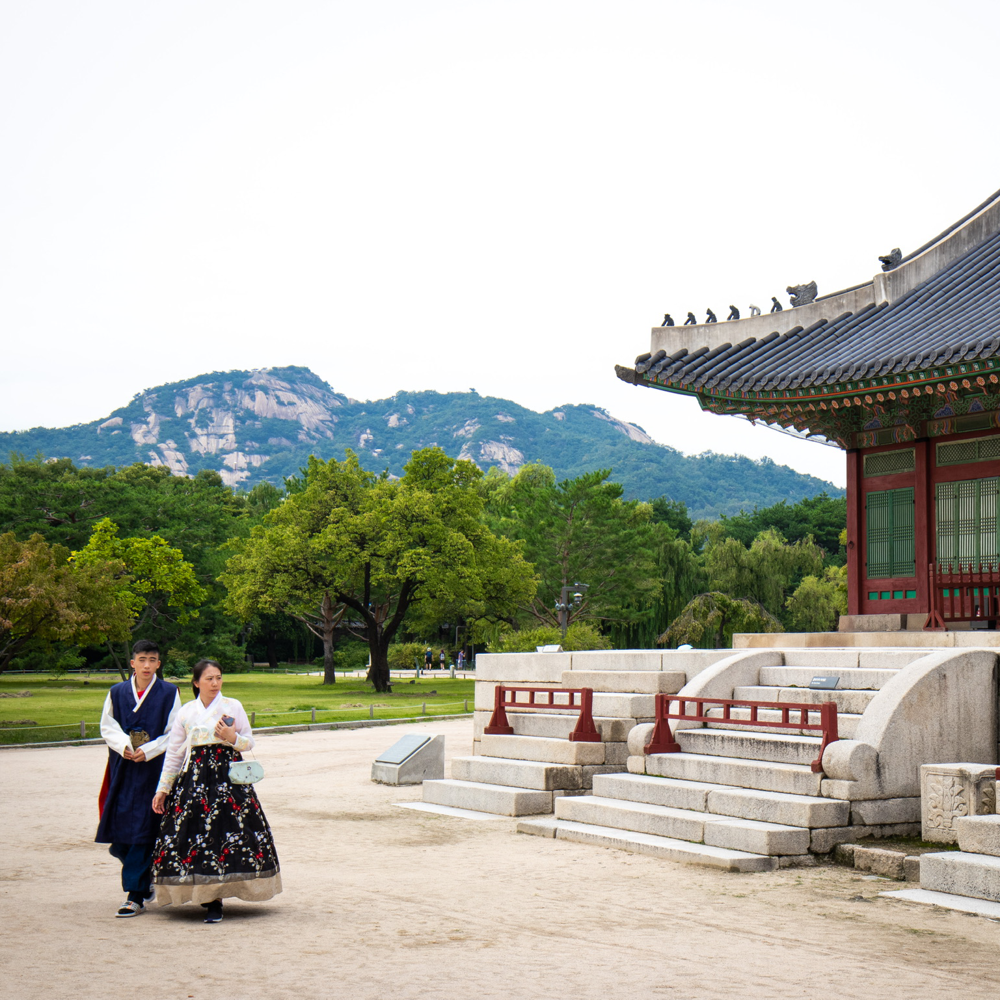
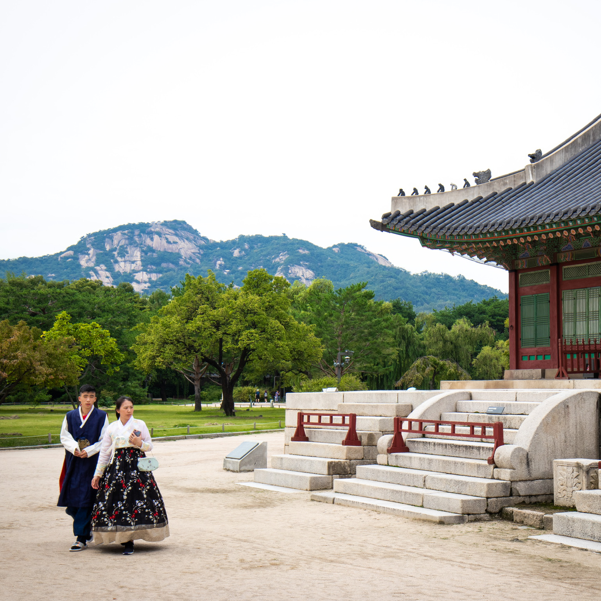

Om mig
Mit navn er Markus Hoffmann Lund, jeg er 24 år gammel og bor foreløbigt i Helsingør. Til dagligt læser jeg til Multimediedesigner på KEA og har i den forbindelse lige sagt mit job op i Hørsholm. I min fritid hænger jeg ud med nære venner, spiller computer eller PlayStation, eller skyder billeder. Jeg har en stor interesse for musik og gør en dyd ud af at udvide min, i forvejen, brede musiksmag. Jeg har før leget lidt med diverse musikprogrammer og elsker at være kreativ. Jeg har en stor kærlighed til asien, især Japan og Syd Korea, som jeg har besøgt flere gange. Meget af den underholdning jeg fylder mig med, er præget af deres kultur og jeg tæller altid ned til næste gang jeg kan besøge disse lande. Jeg skyder oftest billeder på hobbyplan, men har også flere gange sagt ja til bryllupsfotografering, portrætter og produktbilleder. Min seneste passion er analogfotografering, som jeg har nydt i snart en håndfuld år. Udtrykket på de analoge billeder er noget der tiltaler mig mere for tiden og mange eksempler kan ses på min instagram.
 
